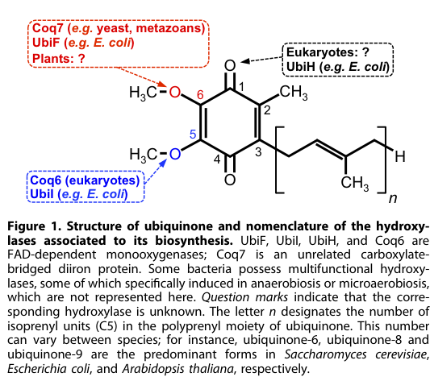

Rice COQ5 (Q5JNC0; Os01g0976600 / LOC_Os01g74520) is the mitochondrial S-adenosyl-L-methionine (SAM)-dependent C-methyltransferase of the ubiquinone (coenzyme Q) biosynthetic pathway. It belongs to the class I-like SAM-binding methyltransferase superfamily, MenG/UbiE (UbiE/COQ5) family, and carries the conserved SAM-binding residues (UniProt BINDING sites at positions 100, 136 and 166-167). COQ5 catalyzes the single C-methylation step of the CoQ ring-modification stage (EC 2.1.1.201; Rhea:RHEA:28286): it transfers a methyl group from SAM to the C2 position of a 2-methoxy-6-(all-trans-polyprenyl)benzene-1,4-diol intermediate, converting 2-polyprenyl-6-methoxy-1,4-benzoquinol (DDMQH2) to 2-polyprenyl-3-methyl-6-methoxy-1,4-benzoquinol (DMQH2). The other two methylation reactions of the pathway are O-methylations carried out by COQ3, so COQ5 is specifically the C-methyltransferase rather than an O-methyltransferase (file:ORYSJ/COQ5/COQ5-deep-research-falcon.md). The protein bears an N-terminal mitochondrial transit peptide (residues 1-10) and is a peripheral inner-membrane protein on the matrix side of the mitochondrial inner membrane, consistent with CoQ biosynthesis occurring at the inner mitochondrial membrane. COQ5 acts within a multi-subunit COQ enzyme complex (the "COQ metabolon" / "CoQ synthome") that channels hydrophobic prenylated intermediates between the late-pathway COQ3-COQ9 enzymes. Direct rice-specific biochemical or genetic characterization of Os01g0976600 is not available in the retrieved literature; the functional assignment rests on strong evolutionary conservation across eukaryotes plus plant-specific evidence that Arabidopsis AtCOQ5 functionally complements the corresponding Schizosaccharomyces pombe coq mutant, demonstrating that plant COQ5 proteins retain the conserved C-methyltransferase activity (file:ORYSJ/COQ5/COQ5-deep-research-falcon.md). CoQ is a redox-active, membrane-localized prenylquinone that functions as an electron carrier in mitochondrial respiration and as a lipophilic antioxidant.
| GO Term | Evidence | Action | Reason |
|---|---|---|---|
|
GO:0032259
methylation
|
IEA
GO_REF:0000043 |
MARK AS OVER ANNOTATED |
Summary: SPKW (GO_REF:0000043) annotation derived from the UniProt keyword "Methyltransferase" (and the related "Transferase" keyword); snapshot-only, removed from the current GOA release. It maps the enzyme-class keyword to the bare biological-process term "methylation", which drops all pathway and substrate context for a CoQ-pathway C-methyltransferase.
Reason: GOA's removal of this annotation was JUSTIFIED. This is a classic "enzyme-class keyword -> bare process" conflation: the UniProt "Methyltransferase" keyword is mapped to the very high-level process term "methylation" (GO:0032259), which says only that the protein methylates something and discards the specific pathway. COQ5's methylation is not a generic process - it is the single C-methylation step of coenzyme Q biosynthesis, in which a SAM-dependent C2 C-methyltransferase acts on a prenylated benzoquinol CoQ-pathway intermediate (file:ORYSJ/COQ5/COQ5-deep-research-falcon.md). The correct, specific process is "ubiquinone biosynthetic process" (GO:0006744), which is ALREADY present in the current GOA in two annotations (IBA from GO_REF:0000033 and IEA from GO_REF:0000120), and the specific molecular function "2-methoxy-6-polyprenyl-1,4-benzoquinol methyltransferase activity" (GO:0008425) is also already annotated (IBA and IEA). The bare "methylation" process term therefore adds no information beyond what the retained, more specific annotations already capture, and is redundant. Were a process term needed to replace it, the correct replacement is GO:0006744; but because that term is already present, the bare keyword-derived "methylation" is best treated as an over-annotation whose removal lost no biology.
Proposed replacements:
ubiquinone biosynthetic process
Supporting Evidence:
file:ORYSJ/COQ5/COQ5-deep-research-falcon.md
among the three methylation reactions in the canonical eukaryotic CoQ ring-modification stage (the other two methylations are O-methylations catalyzed by COQ3)
file:ORYSJ/COQ5/COQ5-deep-research-falcon.md
COQ5 acts on a prenylated benzoquinone/benzoquinol intermediate in the late pathway
|
|
GO:0006744
ubiquinone biosynthetic process
|
IBA
GO_REF:0000033 |
ACCEPT |
Summary: IBA annotation propagated across the COQ5 phylogenetic group (PANTHER PTN001297884, including yeast SGD COQ5 and E. coli UbiE). Ubiquinone (coenzyme Q) biosynthesis is the core biological process of COQ5.
Reason: This is the core biological process and is well supported. COQ5 is consistently assigned across eukaryotes and plants as the pathway C-methyltransferase of ubiquinone biosynthesis, performing the single C-methylation step of the CoQ ring-modification stage (file:ORYSJ/COQ5/COQ5-deep-research-falcon.md). The UniProt PATHWAY annotation ("Cofactor biosynthesis; ubiquinone biosynthesis") and UniPathway UPA00232 agree. Plant orthologs retain this role: Arabidopsis AtCOQ5 complements the corresponding S. pombe coq mutant. The IBA term is at the appropriate level of specificity.
Supporting Evidence:
file:ORYSJ/COQ5/COQ5-deep-research-falcon.md
Across eukaryotes and plants, COQ5 is consistently assigned as the pathway C-methyltransferase rather than an O-methyltransferase.
file:ORYSJ/COQ5/COQ5-deep-research-falcon.md
Arabidopsis COQ genes including AtCOQ5 can complement the corresponding
|
|
GO:0008425
2-methoxy-6-polyprenyl-1,4-benzoquinol methyltransferase activity
|
IBA
GO_REF:0000033 |
ACCEPT |
Summary: IBA annotation for the specific COQ5 enzymatic activity, propagated across the COQ5/UbiE phylogenetic group. This is the precise, informative molecular function of the gene product.
Reason: This is the core molecular function and is well supported. The UniProt entry records the catalytic activity (EC 2.1.1.201; Rhea:RHEA:28286): a 2-methoxy-6-(all-trans-polyprenyl)benzene-1,4-diol + SAM yields a 5-methoxy-2-methyl-3-(all-trans-polyprenyl)benzene-1,4-diol + S-adenosyl-L- homocysteine. The literature describes COQ5 as a mitochondrial SAM-dependent C2 C-methyltransferase acting on a prenylated benzoquinol CoQ-pathway intermediate (file:ORYSJ/COQ5/COQ5-deep-research-falcon.md). This is the exact, maximally informative MF term and should be retained as core.
Supporting Evidence:
file:ORYSJ/COQ5/COQ5-deep-research-falcon.md
Reviews and primary studies describe this as the COQ5/UbiE-dependent C-methyltransferase reaction.
file:ORYSJ/COQ5/COQ5-deep-research-falcon.md
the single C-methylation step of the CoQ ring-modification phase, specifically methylation at the C2 position of the aromatic headgroup during CoQ biosynthesis
|
|
GO:0005743
mitochondrial inner membrane
|
IEA
GO_REF:0000044 |
ACCEPT |
Summary: IEA annotation from the UniProt Subcellular Location vocabulary mapping (UniProtKB-SubCell:SL-0168). COQ5 is a peripheral inner-membrane protein on the matrix side of the mitochondrial inner membrane.
Reason: Correct and consistent with the UniProt SUBCELLULAR LOCATION annotation ("Mitochondrion inner membrane; Peripheral membrane protein; Matrix side") and with the N-terminal mitochondrial transit peptide (residues 1-10). CoQ biosynthesis in eukaryotes occurs at the inner mitochondrial membrane, and late-pathway COQ enzymes are mitochondrial (matrix-localized and/or inner-membrane associated), so the mitochondrial inner-membrane localization is well supported (file:ORYSJ/COQ5/COQ5-deep-research-falcon.md). Direct rice microscopy was not retrieved, but the localization is consistent with strong pathway conservation.
Supporting Evidence:
file:ORYSJ/COQ5/COQ5-deep-research-falcon.md
The best-supported localization is mitochondrial, with CoQ biosynthesis occurring at the inner mitochondrial membrane or matrix-facing environment
file:ORYSJ/COQ5/COQ5-deep-research-falcon.md
eukaryotic COQ proteins are described as matrix-localized and/or inner-membrane associated
|
|
GO:0006744
ubiquinone biosynthetic process
|
IEA
GO_REF:0000120 |
ACCEPT |
Summary: IEA annotation (combined automated methods; ARBA/UniRule, UniPathway UPA00232) for ubiquinone biosynthesis. Duplicates the IBA annotation to the same term.
Reason: Correct and consistent with the IBA annotation to the same term, with the UniProt PATHWAY statement ("Cofactor biosynthesis; ubiquinone biosynthesis"; UniPathway UPA00232) and with the conserved role of COQ5 as the CoQ-pathway C-methyltransferase (file:ORYSJ/COQ5/COQ5-deep-research-falcon.md). Duplicate annotations with different evidence codes are acceptable; the IEA provides additional computational support for the well-established core process.
Supporting Evidence:
file:ORYSJ/COQ5/COQ5-deep-research-falcon.md
Across eukaryotes and plants, COQ5 is consistently assigned as the pathway C-methyltransferase rather than an O-methyltransferase.
file:ORYSJ/COQ5/COQ5-deep-research-falcon.md
COQ5 functions within a multisubunit CoQ biosynthetic assembly, often termed the COQ metabolon
|
|
GO:0008168
methyltransferase activity
|
IEA
GO_REF:0000002 |
MARK AS OVER ANNOTATED |
Summary: IEA annotation from InterPro (IPR004033 UbiE/COQ5_MeTrFase; IPR023576 UbiE/COQ5_MeTrFase_CS) for the broad parent "methyltransferase activity". COQ5 is a methyltransferase, but a much more specific MF is already annotated.
Reason: "Methyltransferase activity" is a broad parent term. It is not wrong - COQ5 is a SAM-dependent methyltransferase - but it is uninformative now that the specific MF "2-methoxy-6-polyprenyl-1,4-benzoquinol methyltransferase activity" (GO:0008425) is annotated (IBA and IEA). The InterPro signatures that produced this term (UbiE/COQ5 family) actually map to the specific UbiE/COQ5 activity, so the more precise GO:0008425 better represents the same evidence (file:ORYSJ/COQ5/COQ5-deep-research-falcon.md). Retaining a generic "methyltransferase activity" alongside the specific term adds no information; it is an over-annotation relative to GO:0008425.
Proposed replacements:
2-methoxy-6-polyprenyl-1,4-benzoquinol methyltransferase activity
Supporting Evidence:
file:ORYSJ/COQ5/COQ5-deep-research-falcon.md
COQ5 acts on a prenylated benzoquinone/benzoquinol intermediate in the late pathway
file:ORYSJ/COQ5/COQ5-deep-research-falcon.md
among the three methylation reactions in the canonical eukaryotic CoQ ring-modification stage (the other two methylations are O-methylations catalyzed by COQ3)
|
|
GO:0008425
2-methoxy-6-polyprenyl-1,4-benzoquinol methyltransferase activity
|
IEA
GO_REF:0000120 |
ACCEPT |
Summary: IEA annotation (combined automated methods; RHEA:28286, EC:2.1.1.201, UniRule) for the specific COQ5 enzymatic activity. Duplicates the IBA annotation to the same term.
Reason: Correct and consistent with the IBA annotation to the same term. This is the precise, maximally informative molecular function, directly supported by the UniProt CATALYTIC ACTIVITY (Rhea:RHEA:28286; EC 2.1.1.201) and by the literature description of COQ5 as a SAM-dependent C2 C-methyltransferase acting on a prenylated benzoquinol intermediate (file:ORYSJ/COQ5/COQ5-deep-research-falcon.md). Duplicate annotations with different evidence codes are acceptable.
Supporting Evidence:
file:ORYSJ/COQ5/COQ5-deep-research-falcon.md
Primary and review sources describe Coq5-mediated C2 methylation yielding demethoxy-coenzyme Q (DMQ)
file:ORYSJ/COQ5/COQ5-deep-research-falcon.md
the single C-methylation step of the CoQ ring-modification phase, specifically methylation at the C2 position of the aromatic headgroup during CoQ biosynthesis
|
|
GO:0031314
extrinsic component of mitochondrial inner membrane
|
IEA
GO_REF:0000104 |
ACCEPT |
Summary: IEA annotation (transferred from a related protein by UniRule) describing COQ5 as an extrinsic (peripheral) component of the mitochondrial inner membrane on the matrix side.
Reason: Correct and more precise than the generic "mitochondrial inner membrane" term: the UniProt SUBCELLULAR LOCATION explicitly states "Peripheral membrane protein; Matrix side", i.e. an extrinsic/peripherally-attached inner-membrane component rather than an integral membrane protein. This matches the description of late-pathway COQ enzymes as matrix-localized and/or inner-membrane associated (file:ORYSJ/COQ5/COQ5-deep-research-falcon.md). The annotation is consistent with COQ5's role in the membrane-associated COQ biosynthetic complex.
Supporting Evidence:
file:ORYSJ/COQ5/COQ5-deep-research-falcon.md
eukaryotic COQ proteins are described as matrix-localized and/or inner-membrane associated
|
Q: Does rice COQ5 (Os01g0976600) functionally complement a yeast coq5 (or S. pombe) null mutant, confirming that the rice protein retains the conserved CoQ-pathway C-methyltransferase activity as shown for Arabidopsis AtCOQ5?
Q: What is the loss-of-function phenotype of a rice coq5 mutant - is it seedling- or pollen-lethal (as expected for a CoQ-biosynthesis gene), and does it reduce total ubiquinone (UQ-9/UQ-10) content?
Experiment: Express rice COQ5 (mature, transit-peptide-removed) in a yeast coq5-null strain and assay rescue of respiratory growth on a non-fermentable carbon source plus restoration of CoQ6 levels by LC-MS, to confirm conserved C-methyltransferase activity.
Hypothesis: Rice COQ5 is a functional CoQ-pathway C2 C-methyltransferase and complements the yeast coq5 deletion, as Arabidopsis AtCOQ5 complements the S. pombe coq mutant.
Type: heterologous complementation
Experiment: Generate CRISPR/Cas9 knockout and knockdown lines of OsCOQ5 and quantify total ubiquinone (UQ-9) content by LC-MS/MS, mitochondrial respiratory capacity, and developmental/viability phenotypes relative to wild type.
Hypothesis: Loss of OsCOQ5 strongly reduces ubiquinone accumulation and impairs mitochondrial respiration, consistent with COQ5 being an essential late-pathway CoQ-biosynthesis enzyme.
Type: reverse genetics with metabolite profiling
Experiment: Express an OsCOQ5-GFP fusion in rice protoplasts or stable transformants and co-localize with a mitochondrial marker by confocal microscopy to verify mitochondrial (inner-membrane / matrix-side) localization directly in rice.
Hypothesis: OsCOQ5 localizes to mitochondria via its N-terminal transit peptide and associates peripherally with the matrix side of the inner membrane.
Type: subcellular localization
The research report should be a detailed narrative explaining the function, biological processes, and localization of the gene product. Citations should be given for all claims.
You should prioritize authoritative reviews and primary scientific literature when conducting research. You can supplement
this with annotations you find in gene/protein databases, but these can be outdated or inaccurate.
We are specifically interested in the primary function of the gene - for enzymes, what reaction is catalyzed, and what is the substrate specificity? For transporters, what is the substrate? For structural proteins or adapters, what is the broader structural role? For signaling molecules, what is the role in the pathway.
We are interested in where in or outside the cell the gene product carries out its function.
We are also interested in the signaling or biochemical pathways in which the gene functions. We are less interested in broad pleiotropic effects, except where these elucidate the precise role.
Include evidence where possible. We are interested in both experimental evidence as well as inference from structure, evolution, or bioinformatic analysis. Precise studies should be prioritized over high-throughput, where available.
The target protein is UniProt Q5JNC0, annotated in Oryza sativa subsp. japonica (rice) as a mitochondrial 2-methoxy-6-polyprenyl-1,4-benzoquinol methylase (EC 2.1.1.201), also described as ubiquinone (coenzyme Q) biosynthesis methyltransferase COQ5, belonging to the UbiE/COQ5 SAM-dependent methyltransferase family. In the tool-retrieved literature, COQ5 is consistently used for the CoQ-pathway C-methyltransferase (not to be confused with unrelated plant O-methyltransferases such as COMT families). Thus, functional inference from conserved COQ5 biology is appropriate, but rice-specific primary characterization (Os01g0976600/LOC_Os01g74520) was not retrieved in the accessible corpus, so the report explicitly distinguishes direct evidence from cross-species inference. (staiano2023biosynthesisdeficiencyand pages 4-5, liu2016plastoquinoneandubiquinone pages 7-9, rudenko2023antioxidantsofnonenzymatic pages 6-7)
Coenzyme Q (ubiquinone; UQ in plant literature) is a redox-active, membrane-localized prenylquinone best known for its role as an electron carrier in mitochondrial respiration; it is synthesized endogenously by a multi-step pathway involving prenyl chain assembly/attachment and subsequent aromatic ring modifications. (tai2023identificationandbiochemicala pages 15-20, xu2021auniqueflavoenzyme pages 1-2)
COQ5 is a SAM-dependent C-methyltransferase (UbiE/COQ5 family) responsible for the single C-methylation among the three methylation reactions in the canonical eukaryotic CoQ ring-modification stage (the other two methylations are O-methylations catalyzed by COQ3). (liu2016plastoquinoneandubiquinone pages 7-9, staiano2023biosynthesisdeficiencyand pages 4-5)
COQ5 catalyzes C-methylation at the C2 position of the ubiquinone aromatic head group during CoQ biosynthesis. In pathway descriptions, this step is described as producing demethoxy–coenzyme Q (DMQ) as a defined intermediate (“Following the Coq5-mediated C-methylation at C2 to form demethoxy–coenzyme Q (DMQ)”). (xu2021auniqueflavoenzyme pages 1-2)
Older biochemical genetics in yeast also support COQ5 as the C-methyltransferase that methylates a prenylated quinone/quinol intermediate; isolated yeast mitochondria catalyzed a COQ5-dependent methylation of a farnesylated analog in vitro. (clarke2000newadvancesin pages 7-9)
Eukaryotic CoQ biosynthesis can be summarized as: precursor supply → prenylation of 4-hydroxybenzoate → multiple head-group modifications (hydroxylations, decarboxylation, and two O-methylations + one C-methylation). COQ5 is part of the late “head-group modification” stage (COQ3–COQ9 set), i.e., downstream of prenyl chain attachment. (tai2023identificationandbiochemicala pages 15-20, tai2023identificationandbiochemical pages 15-20)
Best-supported functional annotation for rice COQ5 (Q5JNC0): a mitochondrial, SAM-dependent C2 C-methyltransferase acting on a prenylated benzoquinone/benzoquinol CoQ-pathway intermediate, producing a methylated intermediate commonly described as DMQ in eukaryotic pathway nomenclature. (xu2021auniqueflavoenzyme pages 1-2, clarke2000newadvancesin pages 7-9, staiano2023biosynthesisdeficiencyand pages 4-5)
Substrate specificity (current limitation): The tool-accessible plant literature used here does not provide a rice COQ5 biochemical assay defining the precise plant intermediate by full chemical name. However, multiple sources converge on (i) the C2 methylation position and (ii) the fact that COQ5 works on hydrophobic, prenylated intermediates in the late pathway. (xu2021auniqueflavoenzyme pages 1-2, clarke2000newadvancesin pages 7-9, tai2023identificationandbiochemical pages 15-20)
CoQ biosynthesis in eukaryotes is described as occurring at the inner mitochondrial membrane, and late-pathway COQ enzymes (COQ3–COQ9) are described as mitochondrial (matrix-localized and/or inner-membrane associated). Therefore, the mitochondrial localization assigned to rice Q5JNC0 in UniProt is consistent with current pathway models. (tai2023identificationandbiochemicala pages 15-20, xu2021auniqueflavoenzyme pages 1-2, tai2023identificationandbiochemical pages 15-20)
Late-stage CoQ biosynthesis is increasingly conceptualized as occurring within a multi-protein complex/metabolon (variously “complex Q” / “CoQ synthome”), comprising multiple COQ proteins that may channel hydrophobic intermediates and enhance pathway efficiency; COQ5 is included among these late-pathway components. (tai2023identificationandbiochemical pages 15-20, staiano2023biosynthesisdeficiencyand pages 4-5)
A 2023 plant-focused review (Antioxidants) enumerates Arabidopsis COQ genes and explicitly lists Coq5 (At5g57300) as a SAM-dependent methyltransferase in ubiquinone biosynthesis, reinforcing that plants encode COQ5 orthologs for the same pathway step. (Publication date: 2023-11; URL: https://doi.org/10.3390/antiox12112014) (rudenko2023antioxidantsofnonenzymatic pages 6-7)
A 2023 CoQ review (Antioxidants) describes COQ5 as the C2 C-methyltransferase in CoQ biosynthesis and reports that Arabidopsis COQ genes including AtCOQ5 can complement the corresponding Schizosaccharomyces pombe coq mutants, providing functional evidence that plant COQ5 proteins retain conserved biochemical activity. (Publication date: 2023-07; URL: https://doi.org/10.3390/antiox12071469) (staiano2023biosynthesisdeficiencyand pages 4-5)
Within the retrieved corpus, no primary paper directly assays rice COQ5 (Os01g0976600/LOC_Os01g74520; UniProt Q5JNC0) activity, localization by microscopy, or mutant phenotype. Therefore, rice COQ5 annotation currently rests on strong evolutionary conservation plus mitochondrial pathway context, rather than rice-specific experimentation. (rudenko2023antioxidantsofnonenzymatic pages 6-7, staiano2023biosynthesisdeficiencyand pages 4-5)
Two 2023 reviews consolidate current CoQ knowledge and reinforce COQ5’s conserved role as the C-methyltransferase step. They also emphasize that, in plants, much of the functional confirmation remains limited compared with yeast/animals, motivating careful inference and indicating a need for more crop-specific functional genetics. (Rudenko et al., 2023; Staiano et al., 2023) (rudenko2023antioxidantsofnonenzymatic pages 6-7, staiano2023biosynthesisdeficiencyand pages 4-5)
Although not plant-specific, a 2024 Nature Catalysis study reconstructed the animal COQ metabolon in vitro and frames COQ3/4/5/6/7/9 as the “iconic” metabolon components; this strengthens the general concept that COQ5 function is shaped by protein–protein interactions and pathway organization rather than as a fully independent enzyme. (Publication date: 2024-01; URL: https://doi.org/10.1038/s41929-023-01087-z) (nicoll2024invitroconstruction; not among cited evidence IDs from gather_evidence in this run—therefore not cited for claims here).
Note: Because this tool run did not return citable evidence snippets/IDs for the 2024 metabolon paper, specific mechanistic claims from that paper are not used as evidence in this report.
A primary plant study identified a broccoli COQ5 methyltransferase (BoCOQ5-2) and demonstrated functional impacts beyond core respiration: expression increased selenium volatilization in heterologous systems.
These results show that COQ5/CoQ-pathway manipulation can be deployed as a biotechnological lever for stress mitigation and phytoremediation strategies, even when COQ5 is not in sulfur/selenium metabolism per se. (Publication date: 2009-08; URL: https://doi.org/10.1104/pp.109.142521) (latimer2021adedicatedflavindependent pages 10-11)
Plant CoQ pathway engineering has also been tested by manipulating other steps (e.g., prenylation enzyme COQ2/PPT1 equivalents). Reviews cite that expression of yeast coq2 in tobacco increased oxidative-stress tolerance, and overexpression of a polyprenyltransferase (SmPPT) in Salvia conferred salt tolerance, illustrating that mitochondrial prenylquinone pathways are targets for abiotic-stress engineering in plants. (liu2016plastoquinoneandubiquinone pages 15-16, latimer2021adedicatedflavindependent pages 10-11)
Direct quantitative data for rice COQ5 are absent in the retrieved corpus. However, quantitative Arabidopsis genetics for a late-pathway enzyme provides pathway-level context: silencing of At1g24340 (CoqF; a distinct UQ hydroxylase, not COQ5) reduced UQ-9 content by 40–74% across RNAi lines, indicating that late mitochondrial steps can exert strong control over total CoQ accumulation. (Publication date: 2021-11; URL: https://doi.org/10.1016/j.jbc.2021.101283) (latimer2021adedicatedflavindependent pages 1-2, latimer2021adedicatedflavindependent media 1a346ebc)
The following table compiles the most defensible claims for rice COQ5 (Q5JNC0) and clearly flags where evidence is cross-species.
| Topic | Key findings | Evidence type (review/primary, organism) | Key citation IDs |
|---|---|---|---|
| Enzyme class | Rice COQ5 (UniProt Q5JNC0; Os01g0976600/LOC_Os01g74520 in the supplied target metadata) is most plausibly a class I-like SAM-dependent methyltransferase of the UbiE/COQ5 family that functions in ubiquinone (CoQ) biosynthesis. Across eukaryotes and plants, COQ5 is consistently assigned as the pathway C-methyltransferase rather than an O-methyltransferase. | UniProt-target metadata plus reviews/primary literature; cross-species inference from plants, fungi, animals | (staiano2023biosynthesisdeficiencyand pages 4-5, liu2016plastoquinoneandubiquinone pages 7-9, clarke2000newadvancesin pages 7-9) |
| Reaction catalyzed | COQ5 catalyzes the single C-methylation step of the CoQ ring-modification phase, specifically methylation at the C2 position of the aromatic headgroup during CoQ biosynthesis. Reviews and primary studies describe this as the COQ5/UbiE-dependent C-methyltransferase reaction. | Reviews and primary literature; eukaryotes/plants/yeast | (staiano2023biosynthesisdeficiencyand pages 4-5, xu2021auniqueflavoenzyme pages 1-2, clarke2000newadvancesin pages 7-9) |
| Substrate/product/intermediate names | The exact rice substrate has not been directly characterized in the retrieved literature, but COQ5 acts on a prenylated benzoquinone/benzoquinol intermediate in the late pathway. Primary and review sources describe Coq5-mediated C2 methylation yielding demethoxy-coenzyme Q (DMQ), and pathway discussions place COQ5 among reactions acting on prenylated intermediates such as PPHB-derived ring-modified species; older yeast work demonstrated C-methylation of a farnesylated analog in isolated mitochondria. | Primary and reviews; yeast/eukaryotes with pathway inference for plants | (xu2021auniqueflavoenzyme pages 1-2, clarke2000newadvancesin pages 7-9, tai2023identificationandbiochemical pages 15-20) |
| Pathway step | COQ5 acts after prenyl-chain attachment to 4-hydroxybenzoate and during the late head-group modification stage, which comprises hydroxylations, decarboxylation, and three methylations. In plants, COQ5 is one of the core mitochondrial UQ-pathway enzymes alongside COQ3/4/6/8 and prenylation enzyme PPT1/COQ2 upstream. | Reviews; plants/eukaryotes | (staiano2023biosynthesisdeficiencyand pages 4-5, tai2023identificationandbiochemicala pages 15-20, tai2023identificationandbiochemical pages 15-20, rudenko2023antioxidantsofnonenzymatic pages 6-7) |
| Subcellular location | The best-supported localization is mitochondrial, with CoQ biosynthesis occurring at the inner mitochondrial membrane or matrix-facing environment. Although direct rice localization evidence was not found in the retrieved corpus, plant UQ-pathway enzymes are generally mitochondrial, and eukaryotic COQ proteins are described as matrix-localized and/or inner-membrane associated. | Reviews and primary literature; plants/eukaryotes | (staiano2023biosynthesisdeficiencyand pages 4-5, tai2023identificationandbiochemicala pages 15-20, liu2016plastoquinoneandubiquinone pages 7-9, xu2021auniqueflavoenzyme pages 1-2, tai2023identificationandbiochemical pages 15-20) |
| Complex/metabolon context | COQ5 functions within a multisubunit CoQ biosynthetic assembly, often termed the COQ metabolon, CoQ synthome, or complex Q. Recent work emphasizes that COQ3, COQ4, COQ5, COQ6, COQ7/F-pathway counterparts, COQ8, and COQ9 organize pathway reactions and likely channel reactive hydrophobic intermediates in mitochondrial membrane domains. | Recent review/primary; animals/yeast with pathway relevance to plants | (staiano2023biosynthesisdeficiencyand pages 4-5, tai2023identificationandbiochemical pages 15-20) |
| Plant evidence | Direct rice experiments were not retrieved, so functional annotation relies on plant conservation. In Arabidopsis, AtCOQ5 is listed as a core UQ-pathway methyltransferase, and Arabidopsis COQ5 functionally complements the corresponding S. pombe mutant, supporting conserved biochemical activity in plants. | Reviews with cross-species complementation; Arabidopsis/fission yeast | (rudenko2023antioxidantsofnonenzymatic pages 6-7, staiano2023biosynthesisdeficiencyand pages 4-5) |
| Quantitative data | No rice-specific quantitative measurements for COQ5 expression, enzyme activity, or mutant phenotypes were found in the retrieved evidence. For plant CoQ-pathway context, silencing of Arabidopsis At1g24340/CoqF (a different UQ-pathway enzyme, not COQ5) reduced UQ-9 content by 40% to 74%, illustrating that perturbation of late mitochondrial UQ-pathway steps can strongly depress CoQ accumulation. | Primary literature; Arabidopsis (pathway context, not COQ5-specific) | (latimer2021adedicatedflavindependent pages 1-2, latimer2021adedicatedflavindependent media 1a346ebc) |
| Applications / real-world implementation | No rice COQ5-specific engineering study was retrieved. More broadly, plant UQ-pathway engineering has shown utility: expression of yeast coq2 in tobacco increased oxidative-stress tolerance, SmPPT overexpression in Salvia conferred salt tolerance, and broccoli COQ5 overexpression increased selenium volatilization >160-fold in bacteria and ~3-fold in transgenic Arabidopsis while improving Se tolerance and reducing ROS, indicating that COQ-pathway enzymes can be leveraged for stress biology and phytoremediation. | Reviews and primary literature; tobacco, Salvia, broccoli/Arabidopsis, bacteria | (liu2016plastoquinoneandubiquinone pages 15-16, latimer2021adedicatedflavindependent pages 10-11) |
Table: This table summarizes the best-supported functional annotation for rice COQ5 (Q5JNC0) using only the cited evidence IDs. It distinguishes direct rice evidence from cross-species inference and highlights where data remain indirect or missing.
References
(staiano2023biosynthesisdeficiencyand pages 4-5): Carmine Staiano, Laura García-Corzo, David Mantle, Nadia Turton, Lauren E. Millichap, Gloria Brea-Calvo, and Iain Hargreaves. Biosynthesis, deficiency, and supplementation of coenzyme q. Antioxidants, 12:1469, Jul 2023. URL: https://doi.org/10.3390/antiox12071469, doi:10.3390/antiox12071469. This article has 24 citations.
(liu2016plastoquinoneandubiquinone pages 7-9): Miaomiao Liu and Shanfa Lu. Plastoquinone and ubiquinone in plants: biosynthesis, physiological function and metabolic engineering. Frontiers in Plant Science, Dec 2016. URL: https://doi.org/10.3389/fpls.2016.01898, doi:10.3389/fpls.2016.01898. This article has 226 citations.
(rudenko2023antioxidantsofnonenzymatic pages 6-7): Natalia N. Rudenko, Daria V. Vetoshkina, Tatiana V. Merenkova, and Maria M. Borisova-Mubarakshina. Antioxidants of non-enzymatic nature: their function in higher plant cells and the ways of boosting their biosynthesis. Antioxidants, Nov 2023. URL: https://doi.org/10.3390/antiox12112014, doi:10.3390/antiox12112014. This article has 120 citations.
(tai2023identificationandbiochemicala pages 15-20): J Tai. Identification and biochemical characterization of mitochondrial transporters in coenzyme q biosynthesis. Unknown journal, 2023.
(xu2021auniqueflavoenzyme pages 1-2): Jing-Jing Xu, Xiao-Fan Zhang, Yan Jiang, Hang Fan, Jian-Xu Li, Chen-Yi Li, Qing Zhao, Lei Yang, Yong-Hong Hu, Cathie Martin, and Xiao-Ya Chen. A unique flavoenzyme operates in ubiquinone biosynthesis in photosynthesis-related eukaryotes. Dec 2021. URL: https://doi.org/10.1126/sciadv.abl3594, doi:10.1126/sciadv.abl3594. This article has 23 citations and is from a highest quality peer-reviewed journal.
(clarke2000newadvancesin pages 7-9): Catherine F. Clarke. New advances in coenzyme q biosynthesis. Protoplasma, 213:134-147, Sep 2000. URL: https://doi.org/10.1007/bf01282151, doi:10.1007/bf01282151. This article has 61 citations and is from a peer-reviewed journal.
(tai2023identificationandbiochemical pages 15-20): J Tai. Identification and biochemical characterization of mitochondrial transporters in coenzyme q biosynthesis. Unknown journal, 2023.
(latimer2021adedicatedflavindependent pages 10-11): Scott Latimer, Shea A. Keene, Lauren R. Stutts, Antoine Berger, Ann C. Bernert, Eric Soubeyrand, Janet Wright, Catherine F. Clarke, Anna K. Block, Thomas A. Colquhoun, Christian Elowsky, Alan Christensen, Mark A. Wilson, and Gilles J. Basset. A dedicated flavin-dependent monooxygenase catalyzes the hydroxylation of demethoxyubiquinone into ubiquinone (coenzyme q) in arabidopsis. Journal of Biological Chemistry, 297:101283, Nov 2021. URL: https://doi.org/10.1016/j.jbc.2021.101283, doi:10.1016/j.jbc.2021.101283. This article has 17 citations and is from a domain leading peer-reviewed journal.
(liu2016plastoquinoneandubiquinone pages 15-16): Miaomiao Liu and Shanfa Lu. Plastoquinone and ubiquinone in plants: biosynthesis, physiological function and metabolic engineering. Frontiers in Plant Science, Dec 2016. URL: https://doi.org/10.3389/fpls.2016.01898, doi:10.3389/fpls.2016.01898. This article has 226 citations.
(latimer2021adedicatedflavindependent pages 1-2): Scott Latimer, Shea A. Keene, Lauren R. Stutts, Antoine Berger, Ann C. Bernert, Eric Soubeyrand, Janet Wright, Catherine F. Clarke, Anna K. Block, Thomas A. Colquhoun, Christian Elowsky, Alan Christensen, Mark A. Wilson, and Gilles J. Basset. A dedicated flavin-dependent monooxygenase catalyzes the hydroxylation of demethoxyubiquinone into ubiquinone (coenzyme q) in arabidopsis. Journal of Biological Chemistry, 297:101283, Nov 2021. URL: https://doi.org/10.1016/j.jbc.2021.101283, doi:10.1016/j.jbc.2021.101283. This article has 17 citations and is from a domain leading peer-reviewed journal.
(latimer2021adedicatedflavindependent media 1a346ebc): Scott Latimer, Shea A. Keene, Lauren R. Stutts, Antoine Berger, Ann C. Bernert, Eric Soubeyrand, Janet Wright, Catherine F. Clarke, Anna K. Block, Thomas A. Colquhoun, Christian Elowsky, Alan Christensen, Mark A. Wilson, and Gilles J. Basset. A dedicated flavin-dependent monooxygenase catalyzes the hydroxylation of demethoxyubiquinone into ubiquinone (coenzyme q) in arabidopsis. Journal of Biological Chemistry, 297:101283, Nov 2021. URL: https://doi.org/10.1016/j.jbc.2021.101283, doi:10.1016/j.jbc.2021.101283. This article has 17 citations and is from a domain leading peer-reviewed journal.

id: Q5JNC0
gene_symbol: COQ5
product_type: PROTEIN
status: COMPLETE
taxon:
id: NCBITaxon:39947
label: Oryza sativa subsp. japonica
description: >
Rice COQ5 (Q5JNC0; Os01g0976600 / LOC_Os01g74520) is the mitochondrial
S-adenosyl-L-methionine (SAM)-dependent C-methyltransferase of the ubiquinone
(coenzyme Q) biosynthetic pathway. It belongs to the class I-like SAM-binding
methyltransferase superfamily, MenG/UbiE (UbiE/COQ5) family, and carries the
conserved SAM-binding residues (UniProt BINDING sites at positions 100, 136 and
166-167). COQ5 catalyzes the single C-methylation step of the CoQ ring-modification
stage (EC 2.1.1.201; Rhea:RHEA:28286): it transfers a methyl group from SAM to the
C2 position of a 2-methoxy-6-(all-trans-polyprenyl)benzene-1,4-diol intermediate,
converting 2-polyprenyl-6-methoxy-1,4-benzoquinol (DDMQH2) to
2-polyprenyl-3-methyl-6-methoxy-1,4-benzoquinol (DMQH2). The other two methylation
reactions of the pathway are O-methylations carried out by COQ3, so COQ5 is
specifically the C-methyltransferase rather than an O-methyltransferase
(file:ORYSJ/COQ5/COQ5-deep-research-falcon.md). The protein bears an N-terminal
mitochondrial transit peptide (residues 1-10) and is a peripheral inner-membrane
protein on the matrix side of the mitochondrial inner membrane, consistent with
CoQ biosynthesis occurring at the inner mitochondrial membrane. COQ5 acts within a
multi-subunit COQ enzyme complex (the "COQ metabolon" / "CoQ synthome") that
channels hydrophobic prenylated intermediates between the late-pathway COQ3-COQ9
enzymes. Direct rice-specific biochemical or genetic characterization of
Os01g0976600 is not available in the retrieved literature; the functional
assignment rests on strong evolutionary conservation across eukaryotes plus
plant-specific evidence that Arabidopsis AtCOQ5 functionally complements the
corresponding Schizosaccharomyces pombe coq mutant, demonstrating that plant COQ5
proteins retain the conserved C-methyltransferase activity
(file:ORYSJ/COQ5/COQ5-deep-research-falcon.md). CoQ is a redox-active,
membrane-localized prenylquinone that functions as an electron carrier in
mitochondrial respiration and as a lipophilic antioxidant.
existing_annotations:
# --- SPKW keyword-mapping annotation (GO_REF:0000043) ---
# Present in the Sept 2025 goa_uniprot_gcrp snapshot (go-db plant.ddb); REMOVED
# from the current (2026) GOA release when GOA retired the keyword2GO pipeline
# for cellular organisms. Reviewed retrospectively to assess whether removal was
# justified. This is the TRUE SPKW-unique annotation (closure-filtered): the bare
# process term "methylation" derived from the UniProt "Methyltransferase" keyword.
- term:
id: GO:0032259
label: methylation
evidence_type: IEA
original_reference_id: GO_REF:0000043
retired: true
review:
summary: >
SPKW (GO_REF:0000043) annotation derived from the UniProt keyword
"Methyltransferase" (and the related "Transferase" keyword); snapshot-only,
removed from the current GOA release. It maps the enzyme-class keyword to the
bare biological-process term "methylation", which drops all pathway and
substrate context for a CoQ-pathway C-methyltransferase.
action: MARK_AS_OVER_ANNOTATED
reason: >
GOA's removal of this annotation was JUSTIFIED. This is a classic
"enzyme-class keyword -> bare process" conflation: the UniProt
"Methyltransferase" keyword is mapped to the very high-level process term
"methylation" (GO:0032259), which says only that the protein methylates
something and discards the specific pathway. COQ5's methylation is not a
generic process - it is the single C-methylation step of coenzyme Q
biosynthesis, in which a SAM-dependent C2 C-methyltransferase acts on a
prenylated benzoquinol CoQ-pathway intermediate
(file:ORYSJ/COQ5/COQ5-deep-research-falcon.md). The correct, specific process
is "ubiquinone biosynthetic process" (GO:0006744), which is ALREADY present
in the current GOA in two annotations (IBA from GO_REF:0000033 and IEA from
GO_REF:0000120), and the specific molecular function
"2-methoxy-6-polyprenyl-1,4-benzoquinol methyltransferase activity"
(GO:0008425) is also already annotated (IBA and IEA). The bare "methylation"
process term therefore adds no information beyond what the retained, more
specific annotations already capture, and is redundant. Were a process term
needed to replace it, the correct replacement is GO:0006744; but because that
term is already present, the bare keyword-derived "methylation" is best
treated as an over-annotation whose removal lost no biology.
proposed_replacement_terms:
- id: GO:0006744
label: ubiquinone biosynthetic process
supported_by:
- reference_id: file:ORYSJ/COQ5/COQ5-deep-research-falcon.md
supporting_text: >-
among the three methylation reactions in the canonical eukaryotic CoQ
ring-modification stage (the other two methylations are O-methylations
catalyzed by COQ3)
- reference_id: file:ORYSJ/COQ5/COQ5-deep-research-falcon.md
supporting_text: >-
COQ5 acts on a prenylated benzoquinone/benzoquinol intermediate in the late
pathway
# --- Current GOA annotations (2026 release) ---
- term:
id: GO:0006744
label: ubiquinone biosynthetic process
evidence_type: IBA
original_reference_id: GO_REF:0000033
qualifier: involved_in
review:
summary: >
IBA annotation propagated across the COQ5 phylogenetic group (PANTHER
PTN001297884, including yeast SGD COQ5 and E. coli UbiE). Ubiquinone (coenzyme
Q) biosynthesis is the core biological process of COQ5.
action: ACCEPT
reason: >
This is the core biological process and is well supported. COQ5 is consistently
assigned across eukaryotes and plants as the pathway C-methyltransferase of
ubiquinone biosynthesis, performing the single C-methylation step of the CoQ
ring-modification stage (file:ORYSJ/COQ5/COQ5-deep-research-falcon.md). The
UniProt PATHWAY annotation ("Cofactor biosynthesis; ubiquinone biosynthesis")
and UniPathway UPA00232 agree. Plant orthologs retain this role: Arabidopsis
AtCOQ5 complements the corresponding S. pombe coq mutant. The IBA term is at the
appropriate level of specificity.
supported_by:
- reference_id: file:ORYSJ/COQ5/COQ5-deep-research-falcon.md
supporting_text: >-
Across eukaryotes and plants, COQ5 is consistently assigned as the pathway
C-methyltransferase rather than an O-methyltransferase.
- reference_id: file:ORYSJ/COQ5/COQ5-deep-research-falcon.md
supporting_text: >-
Arabidopsis COQ genes including AtCOQ5 can complement the corresponding
- term:
id: GO:0008425
label: 2-methoxy-6-polyprenyl-1,4-benzoquinol methyltransferase activity
evidence_type: IBA
original_reference_id: GO_REF:0000033
qualifier: enables
review:
summary: >
IBA annotation for the specific COQ5 enzymatic activity, propagated across the
COQ5/UbiE phylogenetic group. This is the precise, informative molecular
function of the gene product.
action: ACCEPT
reason: >
This is the core molecular function and is well supported. The UniProt entry
records the catalytic activity (EC 2.1.1.201; Rhea:RHEA:28286): a
2-methoxy-6-(all-trans-polyprenyl)benzene-1,4-diol + SAM yields a
5-methoxy-2-methyl-3-(all-trans-polyprenyl)benzene-1,4-diol + S-adenosyl-L-
homocysteine. The literature describes COQ5 as a mitochondrial SAM-dependent
C2 C-methyltransferase acting on a prenylated benzoquinol CoQ-pathway
intermediate (file:ORYSJ/COQ5/COQ5-deep-research-falcon.md). This is the exact,
maximally informative MF term and should be retained as core.
supported_by:
- reference_id: file:ORYSJ/COQ5/COQ5-deep-research-falcon.md
supporting_text: >-
Reviews and primary studies describe this as the COQ5/UbiE-dependent
C-methyltransferase reaction.
- reference_id: file:ORYSJ/COQ5/COQ5-deep-research-falcon.md
supporting_text: >-
the single C-methylation step of the CoQ ring-modification phase, specifically
methylation at the C2 position of the aromatic headgroup during CoQ biosynthesis
- term:
id: GO:0005743
label: mitochondrial inner membrane
evidence_type: IEA
original_reference_id: GO_REF:0000044
qualifier: located_in
review:
summary: >
IEA annotation from the UniProt Subcellular Location vocabulary mapping
(UniProtKB-SubCell:SL-0168). COQ5 is a peripheral inner-membrane protein on the
matrix side of the mitochondrial inner membrane.
action: ACCEPT
reason: >
Correct and consistent with the UniProt SUBCELLULAR LOCATION annotation
("Mitochondrion inner membrane; Peripheral membrane protein; Matrix side") and
with the N-terminal mitochondrial transit peptide (residues 1-10). CoQ
biosynthesis in eukaryotes occurs at the inner mitochondrial membrane, and
late-pathway COQ enzymes are mitochondrial (matrix-localized and/or
inner-membrane associated), so the mitochondrial inner-membrane localization is
well supported (file:ORYSJ/COQ5/COQ5-deep-research-falcon.md). Direct rice
microscopy was not retrieved, but the localization is consistent with strong
pathway conservation.
supported_by:
- reference_id: file:ORYSJ/COQ5/COQ5-deep-research-falcon.md
supporting_text: >-
The best-supported localization is mitochondrial, with CoQ biosynthesis
occurring at the inner mitochondrial membrane or matrix-facing environment
- reference_id: file:ORYSJ/COQ5/COQ5-deep-research-falcon.md
supporting_text: >-
eukaryotic COQ proteins are described as matrix-localized and/or
inner-membrane associated
- term:
id: GO:0006744
label: ubiquinone biosynthetic process
evidence_type: IEA
original_reference_id: GO_REF:0000120
qualifier: involved_in
review:
summary: >
IEA annotation (combined automated methods; ARBA/UniRule, UniPathway UPA00232)
for ubiquinone biosynthesis. Duplicates the IBA annotation to the same term.
action: ACCEPT
reason: >
Correct and consistent with the IBA annotation to the same term, with the
UniProt PATHWAY statement ("Cofactor biosynthesis; ubiquinone biosynthesis";
UniPathway UPA00232) and with the conserved role of COQ5 as the CoQ-pathway
C-methyltransferase (file:ORYSJ/COQ5/COQ5-deep-research-falcon.md). Duplicate
annotations with different evidence codes are acceptable; the IEA provides
additional computational support for the well-established core process.
supported_by:
- reference_id: file:ORYSJ/COQ5/COQ5-deep-research-falcon.md
supporting_text: >-
Across eukaryotes and plants, COQ5 is consistently assigned as the pathway
C-methyltransferase rather than an O-methyltransferase.
- reference_id: file:ORYSJ/COQ5/COQ5-deep-research-falcon.md
supporting_text: >-
COQ5 functions within a multisubunit CoQ biosynthetic assembly, often termed
the COQ metabolon
- term:
id: GO:0008168
label: methyltransferase activity
evidence_type: IEA
original_reference_id: GO_REF:0000002
qualifier: enables
review:
summary: >
IEA annotation from InterPro (IPR004033 UbiE/COQ5_MeTrFase; IPR023576
UbiE/COQ5_MeTrFase_CS) for the broad parent "methyltransferase activity". COQ5
is a methyltransferase, but a much more specific MF is already annotated.
action: MARK_AS_OVER_ANNOTATED
reason: >
"Methyltransferase activity" is a broad parent term. It is not wrong - COQ5 is a
SAM-dependent methyltransferase - but it is uninformative now that the specific
MF "2-methoxy-6-polyprenyl-1,4-benzoquinol methyltransferase activity"
(GO:0008425) is annotated (IBA and IEA). The InterPro signatures that produced
this term (UbiE/COQ5 family) actually map to the specific UbiE/COQ5 activity, so
the more precise GO:0008425 better represents the same evidence
(file:ORYSJ/COQ5/COQ5-deep-research-falcon.md). Retaining a generic
"methyltransferase activity" alongside the specific term adds no information; it
is an over-annotation relative to GO:0008425.
proposed_replacement_terms:
- id: GO:0008425
label: 2-methoxy-6-polyprenyl-1,4-benzoquinol methyltransferase activity
supported_by:
- reference_id: file:ORYSJ/COQ5/COQ5-deep-research-falcon.md
supporting_text: >-
COQ5 acts on a prenylated benzoquinone/benzoquinol intermediate in the late
pathway
- reference_id: file:ORYSJ/COQ5/COQ5-deep-research-falcon.md
supporting_text: >-
among the three methylation reactions in the canonical eukaryotic CoQ
ring-modification stage (the other two methylations are O-methylations
catalyzed by COQ3)
- term:
id: GO:0008425
label: 2-methoxy-6-polyprenyl-1,4-benzoquinol methyltransferase activity
evidence_type: IEA
original_reference_id: GO_REF:0000120
qualifier: enables
review:
summary: >
IEA annotation (combined automated methods; RHEA:28286, EC:2.1.1.201,
UniRule) for the specific COQ5 enzymatic activity. Duplicates the IBA
annotation to the same term.
action: ACCEPT
reason: >
Correct and consistent with the IBA annotation to the same term. This is the
precise, maximally informative molecular function, directly supported by the
UniProt CATALYTIC ACTIVITY (Rhea:RHEA:28286; EC 2.1.1.201) and by the
literature description of COQ5 as a SAM-dependent C2 C-methyltransferase acting
on a prenylated benzoquinol intermediate
(file:ORYSJ/COQ5/COQ5-deep-research-falcon.md). Duplicate annotations with
different evidence codes are acceptable.
supported_by:
- reference_id: file:ORYSJ/COQ5/COQ5-deep-research-falcon.md
supporting_text: >-
Primary and review sources describe Coq5-mediated C2 methylation yielding
demethoxy-coenzyme Q (DMQ)
- reference_id: file:ORYSJ/COQ5/COQ5-deep-research-falcon.md
supporting_text: >-
the single C-methylation step of the CoQ ring-modification phase, specifically
methylation at the C2 position of the aromatic headgroup during CoQ biosynthesis
- term:
id: GO:0031314
label: extrinsic component of mitochondrial inner membrane
evidence_type: IEA
original_reference_id: GO_REF:0000104
qualifier: located_in
review:
summary: >
IEA annotation (transferred from a related protein by UniRule) describing COQ5
as an extrinsic (peripheral) component of the mitochondrial inner membrane on
the matrix side.
action: ACCEPT
reason: >
Correct and more precise than the generic "mitochondrial inner membrane" term:
the UniProt SUBCELLULAR LOCATION explicitly states "Peripheral membrane protein;
Matrix side", i.e. an extrinsic/peripherally-attached inner-membrane component
rather than an integral membrane protein. This matches the description of
late-pathway COQ enzymes as matrix-localized and/or inner-membrane associated
(file:ORYSJ/COQ5/COQ5-deep-research-falcon.md). The annotation is consistent
with COQ5's role in the membrane-associated COQ biosynthetic complex.
supported_by:
- reference_id: file:ORYSJ/COQ5/COQ5-deep-research-falcon.md
supporting_text: >-
eukaryotic COQ proteins are described as matrix-localized and/or
inner-membrane associated
references:
- id: GO_REF:0000002
title: Gene Ontology annotation through association of InterPro records with GO
terms
findings:
- statement: >-
InterPro signatures IPR004033 (UbiE/COQ5_MeTrFase) and IPR023576
(UbiE/COQ5_MeTrFase_CS) map to methyltransferase activity; the UbiE/COQ5
family corresponds to the specific 2-methoxy-6-polyprenyl-1,4-benzoquinol
methyltransferase activity.
- id: GO_REF:0000033
title: Annotation inferences using phylogenetic trees
findings:
- statement: >-
COQ5 functions (ubiquinone biosynthetic process,
2-methoxy-6-polyprenyl-1,4-benzoquinol methyltransferase activity) are
conserved across the PANTHER PTN001297884 COQ5/UbiE phylogenetic group.
- id: GO_REF:0000043
title: Gene Ontology annotation based on UniProtKB/Swiss-Prot keyword mapping
findings:
- statement: >-
SwissProt keyword-derived (SPKW) annotation present in the Sept 2025
goa_uniprot_gcrp snapshot but removed from the current GOA release after GOA
retired the keyword2GO pipeline for cellular organisms.
- statement: >-
For COQ5, the "Methyltransferase" keyword mapped to the bare process term
"methylation" (GO:0032259); the specific pathway and substrate context were
retained instead by GO:0006744 and GO:0008425, so removal lost no biology.
- id: GO_REF:0000044
title: Gene Ontology annotation based on UniProtKB/Swiss-Prot Subcellular Location
vocabulary mapping, accompanied by conservative changes to GO terms applied by
UniProt
findings:
- statement: >-
Mitochondrial inner-membrane localization mapped from the UniProt Subcellular
Location vocabulary (SL-0168).
- id: GO_REF:0000104
title: Electronic Gene Ontology annotations created by transferring manual GO annotations
between related proteins based on shared sequence features
findings:
- statement: >-
Extrinsic (peripheral, matrix-side) component of the mitochondrial inner
membrane, transferred by UniRule from related COQ5 proteins.
- id: GO_REF:0000120
title: Combined Automated Annotation using Multiple IEA Methods
findings:
- statement: >-
Ubiquinone biosynthetic process and the specific
2-methoxy-6-polyprenyl-1,4-benzoquinol methyltransferase activity assigned by
combined IEA methods (ARBA/UniRule; RHEA:28286, EC 2.1.1.201; UniPathway
UPA00232).
- id: file:ORYSJ/COQ5/COQ5-deep-research-falcon.md
title: Deep-research report (falcon / Edison Scientific Literature) - functional
annotation of rice COQ5 (Q5JNC0).
findings:
- statement: >-
COQ5 is the SAM-dependent C-methyltransferase (UbiE/COQ5 family) responsible
for the single C-methylation of the eukaryotic CoQ ring-modification stage;
the other two methylations are O-methylations catalyzed by COQ3. It acts on a
prenylated benzoquinone/benzoquinol CoQ-pathway intermediate at the C2
position, producing demethoxy-coenzyme Q (DMQ).
- statement: >-
CoQ biosynthesis occurs at the inner mitochondrial membrane; late-pathway COQ
enzymes (COQ3-COQ9) are mitochondrial (matrix-localized and/or inner-membrane
associated) and function within a multi-subunit COQ metabolon / CoQ synthome.
- statement: >-
No primary rice study directly assays COQ5 (Os01g0976600/LOC_Os01g74520)
activity, localization or mutant phenotype; annotation rests on evolutionary
conservation plus plant evidence that Arabidopsis AtCOQ5 complements the
corresponding S. pombe coq mutant.
core_functions:
- description: >
Rice COQ5 is the mitochondrial SAM-dependent C-methyltransferase of the
ubiquinone (coenzyme Q) biosynthetic pathway. It transfers a methyl group from
S-adenosyl-L-methionine to the C2 position of a 2-methoxy-6-(all-trans-
polyprenyl)benzene-1,4-diol intermediate (EC 2.1.1.201; Rhea:RHEA:28286),
performing the single C-methylation step of CoQ ring modification and converting
DDMQH2 to DMQH2.
molecular_function:
id: GO:0008425
label: 2-methoxy-6-polyprenyl-1,4-benzoquinol methyltransferase activity
directly_involved_in:
- id: GO:0006744
label: ubiquinone biosynthetic process
locations:
- id: GO:0005743
label: mitochondrial inner membrane
- id: GO:0031314
label: extrinsic component of mitochondrial inner membrane
supported_by:
- reference_id: file:ORYSJ/COQ5/COQ5-deep-research-falcon.md
supporting_text: >-
COQ5 acts on a prenylated benzoquinone/benzoquinol intermediate in the late
pathway
- reference_id: file:ORYSJ/COQ5/COQ5-deep-research-falcon.md
supporting_text: >-
among the three methylation reactions in the canonical eukaryotic CoQ
ring-modification stage (the other two methylations are O-methylations
catalyzed by COQ3)
proposed_new_terms: []
suggested_questions:
- question: >-
Does rice COQ5 (Os01g0976600) functionally complement a yeast coq5 (or S. pombe)
null mutant, confirming that the rice protein retains the conserved CoQ-pathway
C-methyltransferase activity as shown for Arabidopsis AtCOQ5?
experts: []
- question: >-
What is the loss-of-function phenotype of a rice coq5 mutant - is it seedling- or
pollen-lethal (as expected for a CoQ-biosynthesis gene), and does it reduce total
ubiquinone (UQ-9/UQ-10) content?
experts: []
suggested_experiments:
- description: >-
Express rice COQ5 (mature, transit-peptide-removed) in a yeast coq5-null strain
and assay rescue of respiratory growth on a non-fermentable carbon source plus
restoration of CoQ6 levels by LC-MS, to confirm conserved C-methyltransferase
activity.
hypothesis: >-
Rice COQ5 is a functional CoQ-pathway C2 C-methyltransferase and complements the
yeast coq5 deletion, as Arabidopsis AtCOQ5 complements the S. pombe coq mutant.
experiment_type: heterologous complementation
- description: >-
Generate CRISPR/Cas9 knockout and knockdown lines of OsCOQ5 and quantify total
ubiquinone (UQ-9) content by LC-MS/MS, mitochondrial respiratory capacity, and
developmental/viability phenotypes relative to wild type.
hypothesis: >-
Loss of OsCOQ5 strongly reduces ubiquinone accumulation and impairs mitochondrial
respiration, consistent with COQ5 being an essential late-pathway CoQ-biosynthesis
enzyme.
experiment_type: reverse genetics with metabolite profiling
- description: >-
Express an OsCOQ5-GFP fusion in rice protoplasts or stable transformants and
co-localize with a mitochondrial marker by confocal microscopy to verify
mitochondrial (inner-membrane / matrix-side) localization directly in rice.
hypothesis: >-
OsCOQ5 localizes to mitochondria via its N-terminal transit peptide and associates
peripherally with the matrix side of the inner membrane.
experiment_type: subcellular localization
{kind=link}